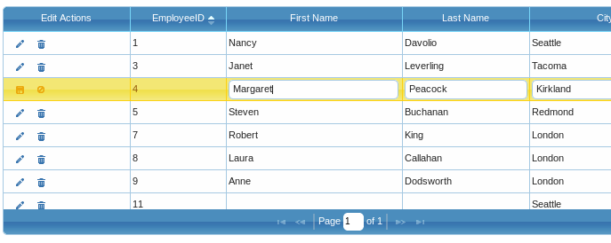

Formatters
¶Formatter supports advanced formatting of the contents of cells in form, in-line and cell editing.
Formatter can be used in either of two ways: Predefined and Custom.
Predefined Formatters¶
The formatter are defined in separate module named jquery.fmatter.js. The module is included in the entire jquery.jqGrid.js file and can be omitted if a custom download is used.
Language options¶
Default language formatting options are defined in the language files e.g., grid.locale-xx (where xx is the two character code for your preferred language).
That means that the formatter options are loaded when the grid javascript files are loaded.
Note
The default formatter options are different for each language file.
Here are the default formatter options for the English file:
$.jgrid.regional["en"] = { ... formatter : { integer : {thousandsSeparator: ",", defaultValue: '0'}, number : {decimalSeparator:".", thousandsSeparator: ",", decimalPlaces: 2, defaultValue: '0.00'}, currency : {decimalSeparator:".", thousandsSeparator: ",", decimalPlaces: 2, prefix: "", suffix:"", defaultValue: '0.00'}, date : { dayNames: [ "Sun", "Mon", "Tue", "Wed", "Thr", "Fri", "Sat", "Sunday", "Monday", "Tuesday", "Wednesday", "Thursday", "Friday", "Saturday" ], monthNames: [ "Jan", "Feb", "Mar", "Apr", "May", "Jun", "Jul", "Aug", "Sep", "Oct", "Nov", "Dec", "January", "February", "March", "April", "May", "June", "July", "August", "September", "October", "November", "December" ], AmPm : ["am","pm","AM","PM"], S: function (j) {return j < 11 || j > 13 ? ['st', 'nd', 'rd', 'th'][Math.min((j - 1) % 10, 3)] : 'th';}, srcformat: 'Y-m-d', newformat: 'n/j/Y', parseRe : /[#%\\\/:_;.,\t\s-]/, masks : { // see http://php.net/manual/en/function.date.php for PHP format used in jqGrid // and see http://docs.jquery.com/UI/Datepicker/formatDate // and https://github.com/jquery/globalize#dates for alternative formats used frequently // one can find on https://github.com/jquery/globalize/tree/master/lib/cultures many // information about date, time, numbers and currency formats used in different countries // one should just convert the information in PHP format ISO8601Long:"Y-m-d H:i:s", ISO8601Short:"Y-m-d", // short date: // n - Numeric representation of a month, without leading zeros // j - Day of the month without leading zeros // Y - A full numeric representation of a year, 4 digits // example: 3/1/2012 which means 1 March 2012 ShortDate: "n/j/Y", // in jQuery UI Datepicker: "M/d/yyyy" // long date: // l - A full textual representation of the day of the week // F - A full textual representation of a month // d - Day of the month, 2 digits with leading zeros // Y - A full numeric representation of a year, 4 digits LongDate: "l, F d, Y", // in jQuery UI Datepicker: "dddd, MMMM dd, yyyy" // long date with long time: // l - A full textual representation of the day of the week // F - A full textual representation of a month // d - Day of the month, 2 digits with leading zeros // Y - A full numeric representation of a year, 4 digits // g - 12-hour format of an hour without leading zeros // i - Minutes with leading zeros // s - Seconds, with leading zeros // A - Uppercase Ante meridiem and Post meridiem (AM or PM) FullDateTime: "l, F d, Y g:i:s A", // in jQuery UI Datepicker: "dddd, MMMM dd, yyyy h:mm:ss tt" // month day: // F - A full textual representation of a month // d - Day of the month, 2 digits with leading zeros MonthDay: "F d", // in jQuery UI Datepicker: "MMMM dd" // short time (without seconds) // g - 12-hour format of an hour without leading zeros // i - Minutes with leading zeros // A - Uppercase Ante meridiem and Post meridiem (AM or PM) ShortTime: "g:i A", // in jQuery UI Datepicker: "h:mm tt" // long time (with seconds) // g - 12-hour format of an hour without leading zeros // i - Minutes with leading zeros // s - Seconds, with leading zeros // A - Uppercase Ante meridiem and Post meridiem (AM or PM) LongTime: "g:i:s A", // in jQuery UI Datepicker: "h:mm:ss tt" SortableDateTime: "Y-m-d\\TH:i:s", UniversalSortableDateTime: "Y-m-d H:i:sO", // month with year // Y - A full numeric representation of a year, 4 digits // F - A full textual representation of a month YearMonth: "F, Y" // in jQuery UI Datepicker: "MMMM, yyyy" }, reformatAfterEdit : false, userLocalTime : false }, baseLinkUrl: '', showAction: '', target: '', checkbox : {disabled:true}, idName : 'id' }, ... }
Here you will find all the settings that you may want to review or change before using the predefined formats. These settings can also be overridden for specific columns using the formatoptions parameter in the colModel.
The second step is to set the desired formatting in colModel. This is done using the option formatter. For example.
jQuery("#grid_id").jqGrid({ ... colModel : [ ... {name:'myname', ... formatter:'number', ...}, ... ], ... });
The example above will format the contents of the 'myname' column according to the rules set for 'number' in the active language file. For example, if the source value is "1234.1", then the value that actually will be put in the grid will be "1 234.10" using the options above.
Column Specific Options¶
Formatter options can be defined for particular columns, overwriting the defaults from the language file. This is accomplished by using the formatoptions options in colModel. For example:
jQuery("#grid_id").jqGrid({ ... colModel : [ ... {name:'myname', ... formatter:'currency', formatoptions:{decimalSeparator:".", thousandsSeparator: ",", decimalPlaces: 2, prefix: "$ "} } , ... ], ... });
This definition will overwrite the default one from the language file. In formatoptions should be placed values appropriate for the particular format type.
Predefined Format Types¶
Below is a list of the predefined format types
Note
All predefined types are compatible with the editing modules. This means that the numbers, links, e-mails, etc., are converted so that they can be edited correctly.
integer¶
Format a integer number according to the following formatoptions properties:
(The default values of these are set in the language file used)
- thousandsSeparator - determines the separator for the thousands.
- defaultValue set the default value if the source data is empty.
Example:
jQuery("#grid_id").jqGrid({ ... colModel : [ ... {name:'myname', ... formatter:'integer', formatoptions:{thousandsSeparator: " ", deaultValue: "0"} } , ... ], ... });
The following code will format the number to:
"1234" => "1 234" " " => "0" "123" => "123"
In case the expected number is not a integer, but number with decimal places - decimalPlaces property should be set to 0 in case to convert to integer, like the following code:
... colModel : [ ... {name:'myname', ... formatter:'integer', formatoptions:{thousandsSeparator: " ", deaultValue: "0", decimalPlaces : 0} } , ... ], ...
"1234.12" => "1 234" " " => "0" "123.65" => "124"
number¶
Format a number according to the following formatoptions properties:
(The default values of these are set in the language file used)
- thousandsSeparator - determines the separator for the thousands.
- decimalSeparator determines the separator for the decimals.
- decimalPlaces determine how many decimal places we should have for the number
- defaultValue set the default value if the source data is empty.
Example:
... colModel : [ ... { name:'myname', ..., formatter:'number', formatoptions:{ thousandsSeparator: " ", decimalSeparator: ".", decimalPlaces : 1, deaultValue: "0.0" } } , ... ], ...
1234.12" => "1 234.1" " " => "0.0" "123.65" => "124.7"
currency¶
Format a number to currency according to the following formatoptions properties:
(The default values of these are set in the language file used)
- thousandsSeparator - determines the separator for the thousands.
- decimalSeparator determines the separator for the decimals.
- decimalPlaces determine how many decimal places we should have for the number
- prefix - string to be inserted before the number
- suffix - string inserted at end of the number
- defaultValue set the default value if the source data is empty.
Example:
... colModel : [ ... { name:'myname', ..., formatter:'currency', formatoptions:{ thousandsSeparator: ",", decimalSeparator: ".", decimalPlaces : 2, prefix : "$ ", suffix : "" deaultValue: "$ 0.00" } } , ... ], ...
"1234.12" => "$ 1,234.12" " " => "$ 0.00" "123.65" => "$ 124.65"
date¶
Format date with source format srcformat to a new format defined with newformat according to the following formatoptions properties:
(The default values of these are set in the language file used)
- srcformat is the source format - i.e. the format of the date that should be converted
- newformat is the new output format.
- parseRe is a expression for parsing date strings.
- reformatAfterEdit (default false) determine if the date should be reformatted after edited - i.e after the user changes the date and save it to the grid. The reason for this is that the date has no unformat when used in editiong modules.
- userLocalTime (default false) forces the local time offset to be calculated to the date when inserted into the grid. See more information below.
The local time offset in the date appear in jqGrid in the following situations.
- A Microsoft data serialization is used and the response contain a date string with offset like:
"/Date(700000+0500)/" - The srcformat is set to 'ISO8601Long' and the date value contain Z at end to indicate the UTC time zone
- The option userLocalTime is set to true and the time offset (in previous calculations) is = 0.
The definition of the date format uses the PHP date formatting
It is possible to use a set of predefined date format - see the mask options in the default date formatting set. In this case it is not needed to set a mask as option - it is needed to input the correct string defined in this property. See examples below
Examples:
... colModel : [ ... { name:'myname', ..., formatter:'date', formatoptions:{ srcformat: "Y-m-d", newformat: "ShortDate" // we use here option mask which is = n/j/Y } } , ... ], ...
The result from this is :
"2017-03-01" = > 3/1/2012
... colModel : [ ... { name:'myname', ..., formatter:'date', formatoptions:{ srcformat: "ISO8601Long", newformat: "m/d/Y H:i" } } , ... ], ...
If the current time is + 2 GMT, the result from this is :
"2017-03-01 11:19:22Z" = > 03/01/2012 13:19
The below example is equivalent to:
... colModel : [ ... { name:'myname', ..., formatter:'date', formatoptions:{ srcformat: "Y-m-d H:i:s", newformat: "m/d/Y H:i", userLocalTime : true } } , ... ], ...
"2017-03-01 11:19:22" = > 03/01/2012 13:19
email¶
When used directly is added a href with mailto: before the e-mail
The formatter does not have formatoptions properties:
Example:
... colModel : [ ... { name:'myname', ..., formatter:'email' } , ... ], ...
john.smith@yahoo.com => <a href="mailto:john.smith@yahoo.com">john.smith@yahoo.com</a>
link¶
Convert a url to a href tag with the following formatoptions:
- target - The target attribute specifies where to open the linked document. The default value of the target options is empty. When this options is set, we construct a link with the target property set and the cell value put in the href tag.
The possible values of the target attribute can be:
- _blank Opens the linked document in a new window or tab
- _self Opens the linked document in the same frame as it was clicked (this is default)
- _parent Opens the linked document in the parent frame
- _top Opens the linked document in the full body of the window
- framename Opens the linked document in a named frame
Example:
... colModel : [ ... { name:'myname', ..., formatter:'link', formatoptions : { target : "_blank" } } , ... ], ...
http://www.guriddo.net => <a href="http://www.guriddo.net" target="_blank">http://www.guriddo.net</a>
showLink¶
This formatter is the same as the link one, with possibility to add additinal parameters to the link. The following formatoptions properties can be used:
- baseLinkUrl is the link used
- showAction is an additional value which is added after the baseLinkUrl.
- addParam is an additional parameter that can be added after the idName property.
- target - specifies where to open the linked document
- idName is the first parameter that is added after the showAction. By default, this is id
Example:
... colModel : [ ... { name:'myname', ..., formatter:'showLink', formatoptions : { baseLinkUrl : 'http://myserver.com/' showaction: 'editrecord.php' addParam : '&action=edit', idName : 'id', // this is default target : '_blank' } } , ... ], ...
if the cell content is Edit Record and the row id = 10, then
Edit Record => <a href="http://myserver.com/editrecord.php?id=10&action=edit" target="_blank">Edit Record</a>
checkbox¶
Creates a checkbox element. The checkbox is not checked if the source cell value is one of the following: false, f, 0, no, n, off, undefined.
Only one format option is available:
- disabled - The default value for the disabled is true. This option determines if the checkbox can be changed. If set to false, the values in checkbox can be changed.
Example:
... colModel : [ ... { name:'myname', ..., formatter:'checkbox', formatoptions : { disabled : false } } , ... ], ...
true => <input checked="checked" value="true" offval="no" type="checkbox">
Special formatters¶
We have two special formatters type which perform useful transformations. The first one is:
Formatter select¶
The select type is not real select. This is used when we use some editing module and have edittype:'select'. The formatter is useful if the data contain key (or code), but we want to display in the grid, the value related to this code or key.
The formatoptions used in this formatter are:
- value the option defines the mapping of key to the value name displayed into the grid. The parameter can be a string or object (see below)
- delimiter used when the value options is a string and delimit the different key:value pair in the string. The default option is ";"
- separator used when the value options is a string and separate the key and value of the key:value pair. Default value is ":"
Note
If the formatoptions are not set we try to get the same values from editoptions object.
Example:
<script> jQuery("#grid_id").jqGrid({ ... colModel : [ {name:'myname', formatter:'select', formatoptions : {value:"1:One;2:Two"}} ... ] ... }); </script>
The source data can contain the keys ("1" or "2"), but the value ("One", or "Two") will be displayed in the grid.
In case of object the definition is as follow:
<script> jQuery("#grid_id").jqGrid({ ... colModel : [ { name:'myname', formatter:'select', formatoptions : { value: { "1":"One","2":"Two" } } } ... ] ... }); </script>
The formatter support multiple option in editoptions which means that if this options is set a multiple values are displayed separated by comma.
Example:
<script> jQuery("#grid_id").jqGrid({ ... colModel : [ { name:'myname', edittype : 'select', formatter:'select', editoptions : { value: { "1":"One","2":"Two"}, multiple : true } } ... ] ... }); </script>
If the source data contain the keys ("1, 2"), then ("One, Two") will be displayed in the grid cell.
The second special formatter is:
Formatter actions¶
Formatter actions is a special feature where we prepare e function which add editable butons on every row. To do this it is needed to define additional column (usually as first or last columns ) in colModel and set it formatter actions.
The following definition:
$("#jqGrid").jqGrid({ ... colModel: [ { label: "Edit Actions", name: "actions", width: 100, formatter: "actions", formatoptions: { keys: true, editOptions: {}, delOptions: {} } }, ... ] ... });
will cause this appearing

The formatter uses the nav property from language file to get some text when hover the buttons and common styleUI property to get the needed icons
The following default parameters are used:
formatoptions: { keys : false, editbutton:true, delbutton:true, editformbutton: false, onEdit : null, onSuccess : false, url : "", extraparam : {}, afterSave : null, onError : null, afterRestore : null, restoreAfterError: null, mtype: 'POST', editOptions: {}, delOptions: {} }
Note
If a edit button is activated after the fields are in edit mode we automatically add two additinal buttons - save row and cancel editing. These buttons can not be disabled.
Bellow is a short description of the parameters:
- keys - boolean variable if set to true, then when the user press ESC key the editing is restored without to be saved; when the user press Enter the editing is saved; if the current field (focused) is textarea and Enter key is pressed save is not occurred.
- editbutton - boolean enables or disables the edit button
- delbutton - boolean enables/disables the delete button - see delOptions below
- editformbutton - boolean enables/disable the form edit form to appear instead of inline one - see editOptions below
- onEdit - fires after successfully accessing the row for editing, prior to allowing user access to the input fields. The row's id is passed as a parameter to this function.
- onSuccess - this function is called immediately after the request which save the data to the server is successful. This function is passed the data returned from the server. Depending on the data from server; this function should return true or false. Useful to notify the user if the operation is successfully or not.
- url - url where the data should be saved, clientArray can be used for local save.
- extraparam - additional user parameters that can be added to be send to the server
- afterSave - this function is called after the data is saved to the server. Parameters passed to this function are the rowid and the response from the server request. The event is called too when the url is set to 'clientArray'.
- onError - function is called after the data is saved to the server. Parameters passed to this function are the rowid and the response from the server request and status. The event is called too when the url is set to 'clientArray'. The event is called either on ajax error or the onSuccess event return false.
- afterRestore - this function is called in after restoring the row (esc key or cancel button). To this function we pass the rowid
- mtype - the method type of posting the data(GET or POST).
- editOptions - object with valid editGridRow options in case editformbutton is set to true. See form editing
- delOptions - object with valid delGridRow options. See form editing
Custom Formatter¶
It is possible define your own formatter for a particular column. Usually this is a function. When set in the formatter option this should not be enclosed in quotes and not entered with () - show just the name of the function.For example,
<script> jQuery("#grid_id").jqGrid({ ... colModel: [ ... { name:'price', index:'price', formatter:currencyFmatter }, ... ] ... }); function currencyFmatter (cellvalue, options, rowObject) { // do something here return new_format_value } </script>
Another possible definition is to set the function and parameters direct in formatter like this:
<script> jQuery("#grid_id").jqGrid({ ... colModel: [ ... { name:'price', index:'price', formatter: function(cellvalue, options, rowObject) { // do something here return new_format_value } }, ... ] ... }); </script>
Definition and parameters¶
To the custom formatter are passed the following parameters
function myformatter ( cellvalue, options, rowObject ) { // format the cellvalue to new format return new_formated_cellvalue; }
Caution
Note the return in the function. This function should always return a string value in order to work correctly.
- cellvalue - is the value to be formatted
- options - is an object containing the following element
options : { rowId: rid, colModel: cm, gid : gridId, pos : column_position, styleUI : guiStyle , isExported : boolval, exporttype : type_when_export}, where
rowId - is the id of the row,
colModel is the object of the properties for this column get from colModel array of jqGrid,
gid is the id of the grid,
pos is the position of the column in colModel,
styleUI is the style object,
isExported is a parameter passed only when export occur allowing to make custom formatting when export is in action. The parameter in this case is true and is valid only when export to CSV, Excel or PDF,
exporttype is a string which is available only when the isExported property is true. This indicates the type of the export - can be csv, pdf or excel depending on the export method called. - rowObject - is a row data represented in the format determined from datatype option. If we have datatype: xml/xmlstring - the rowObject is xml node, provided according to the rules from xmlReader. If we have datatype: json/jsonstring - the rowObject is object, provided according to the rules from jsonReader
Unformatting¶
As mentioned in Predefined Formatter chapter all predefined types are compatible with the editing modules. This means that the numbers, links, e-mails, etc., are converted so that they can be edited correctly. The methods (like getRowData and getCell) that get data, used this unformat in order to get the original value. The question is: What to do if we use a custom formatter function and want to have the original value back if we use editing or methods getRowData and getCell?
The answer is: You can use your own custom unformat function to do that. This function can be used in colModel
Example : show image and edit image's path:
<script> jQuery("#grid_id").jqGrid({ ... colModel: [ ... { name:'price', index:'price', editable: true, formatter:imageFormat, unformat:imageUnFormat }, ... ] ... }); function imageFormat( cellvalue, options, rowObject ){ return '<img src="'+cellvalue+'" />'; } function imageUnFormat( cellvalue, options, cell){ return $('img', cell).attr('src'); } </script>
To the custom unformat function are passed the following parameters:
- cellvalue - is the value to be unformated (pure text).
- options - is an object containing the following element
options : { rowId: rid, colModel: cm} where rowId - is the id of the row colModel is the object of the properties for this column getted from colModel array of jqGrid - cellobject - is a jQuery cell object. This object can be used to obtain different things from the cell element - by example jQuery(cellobject).html() can be used to get the html content instead of the text.
Example formatter¶
Below we will simulate partial currency formatter using a custom format and unformat functions
<script> jQuery("#grid_id").jqGrid({ ... colModel: [ ... { name:'price', index:'price', editable: true, formatter:currencyFmatter, unformat:unformatCurrency }, ... ] ... }); function currencyFmatter (cellvalue, options, rowObject) { return "$"+cellvalue; } function unformatCurrency (cellvalue, options) { return cellvalue.replace("$",""); } </script>
If the value that is inserted or updated in the grid is 123.00, the in the grid it will be displayed as: $123.00; When we use getRowData or getCell methods or any editing module the value for this column will be 123.00
Define common formatter function¶
In case certain custom formatter/unformatter is used many times in the code it is possible to define the formatter functions one time and use it into the code. The formatter module is created so that it can be easy extended from the developer and doing it so make the development process easy. Below is discussion how to make your own formatter functions to be visible all into the code.
After loading the jqGrid Java Script files you can define in script tag the following (or simple create your own file and include it into the head section)
<script type="text/javascript"> jQuery.extend($.fn.fmatter , { currencyFmatter : function(cellvalue, options, rowdata) { return "$"+cellvalue; } }); jQuery.extend($.fn.fmatter.currencyFmatter , { unformat : function(cellvalue, options) { return cellvalue.replace("$",""); } }); </script>
The code to define the formatter is like this:
<script> jQuery("#grid_id").jqGrid({ ... colModel: [ ... { name:'price', index:'price', editable: true, formatter:'currencyFmatter' }, ... ] ... }); ... </script>
Note that in this case it is not needed to specify the unformat function.